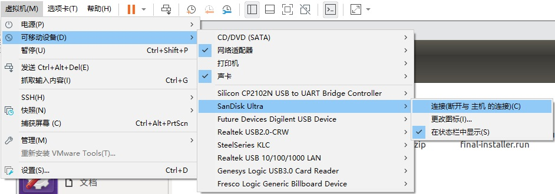
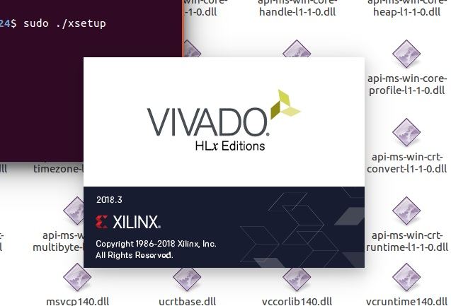
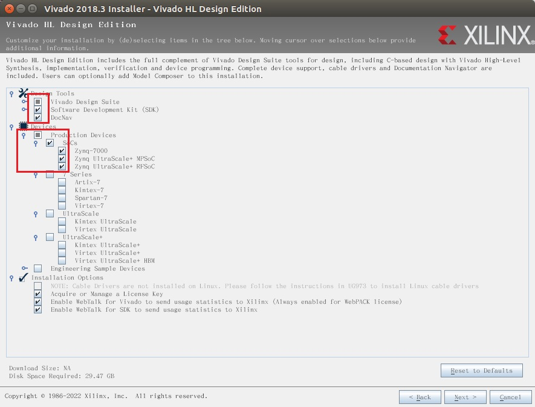
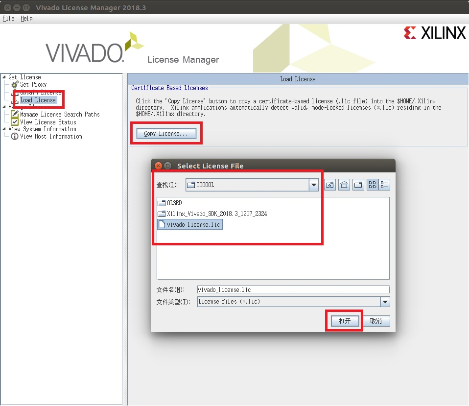

这是一个关于Xilinx-Zynq与Linux的一个简单说明，为了能帮助你更快地上手这个东西。所以文档里基本不会出现PL端的东西，PS端和PL端的交互应该是通过DDR或者什么别的操作完成的，目前我不会...
首先希望你能有一点Linux/Ubuntu使用基础，比如Ubuntu命令行之类的，以及一点Vivado的使用基础。
From.南京理工大学电子工程与光电技术学院——阵列天线与阵列信号处理实验室，2021级硕士张纯杨。

（OS.很离谱，md编辑器出Bug，图片渲染不正常，找原因找到了十二点半才发现是软件Bug）
参考文档在.md文件路径下的docs文件夹里，注意ALINX给出的教程都是基于2017.4版本的，自己注意一下啊，有些东西参考一下就好，不过虚拟机中使用的Ubuntu系统版本是一样的。
Zynq-7000系列，XC7Z100FFG900-2, (在Vivado中建立工程时的选择)
芯片的具体情况看看手册就好，比如PL端的查找表、触发器数量、PS端的核心情况之类。
ALINX的AX7450，如下图：

相对常用的外设包括：
其他外设及具体外设配置情况请参考手册和原理图。
相关的软件包在.md文件目录下的pkg文件夹里，Vivado就不放了，自己下吧，pkg里提供一个license文件。
本人此时因为项目需求，软件版本全是2018.3相关的：
啰嗦地：大部分电脑都是Windows系统，比如我的Win 10（所以如果你的主机是Win 11或者以后更高版本可能有些东西也不适用了吧...），而上述的软件安装并不全是安装在Win主机上的。我们将虚拟机软件（VMware 16.0.0）安装在Win主机上，再用VMware创建虚拟机，将Ubuntu 16.04.3系统挂给我们创建的虚拟机，再将Vivado 2018.3和PetaLinux 2018.3安装到虚拟机上。当然咱们大部分同志也都会在主机上安装Vivado，这无所谓，但是为了后续的一点方便，我选择虚拟机上也安装Vivado。
至于Ubuntu版本的选择，按照Xilinx官方文档UG1144 (PetaLinux Tools Documentation-Reference Guide)中关于PetaLinux 2018.3的安装要求：

所以除了VMware的版本无关紧要以外，剩下这些的版本都要严格对应，至少Ubuntu的版本和PetaLinux版本有严格对应关系，不存在向下兼容之类的说发，切记！！！
讲道理，这个没什么好说的，双击“VMware-workstation-full-16.0.0-16894299.exe”，选择安装路径，傻瓜式“下一步”就好了。密钥在key.txt文件里，随便选一个应该就可以了，要是都不行的话，找找Bing、Baidu、CSDN啥的，应该有共享出来的。
这里我没有放任何截图 ，这块随便点点，自己摸索一下，基本没啥坑，很简单的。
打开VMware，在界面中很容易找到“新建虚拟机”，然后如下操作：
现在我们就在VMware中得到了一个安装有Ubuntu 16.04.3系统但什么都没配置的虚拟机。接下来简单配置一下系统。
输入密码（注意此时小键盘NumLock可能未开启），进入系统，目前系统语言是英语的，可以安装中文，最开始进入系统可能会出现升级相关的提示，选择不升级，保持系统版本。
首先更改Ubuntu的源，Ubuntu默认从美国的源来下载包，速度奇慢无比甚至会无法连接。打开设置（界面左侧齿轮扳手图标：System Settings），选择Software & Updates -> Download from: -> Other，在里面找到China，理论上随便选一个就行，但我建议可以选择mirrors.aliyun.com或者ubuntu.cn99.com，或者直接点击Select Best Server稍等片刻自动选择最好的（我这里的最佳源匹配到了：ubuntu.cn99.com），点击Choose Serveer，输入密码 -> 回车 -> Close -> Reload, 再次稍等片刻。
然后再设置中文，在设置中选择Language Support -> Remind Me Later（可能不会弹出对话框，可跳过） ->Install/Remove Languages...，在里面找到Chinese (simplified)，勾选后点击Apply，输入密码 -> 回车，进入安装中文的等待。下载安装结束后，将Language for menus and windows:滚动到最下边，把“汉语（中国）”拖动到最上（要是没反应，多拖动几次），再将Keyboard input method system:改为fcitx，点击Apply System-Wide -> 输入密码 -> 回车，再选择窗口上方Regional Formats选项卡，把English (United States)改为“汉语（中国）”，点击Apply System-Wide -> 输入密码 -> 回车 -> close，关闭设置窗口。
点击屏幕右上角的齿轮状关机按钮，可能会发现有一个Guest Session，这是系统本身开启了访客模式，很讨厌，我们把他关掉。在桌面单击鼠标右键 -> Open Terminal，输入命令：
sudo gedit /usr/share/lightdm/lightdm.conf.d/50-guest-wrapper.conf
Terminal界面弹出：
[sudo] password for XXX:
此时键盘输入密码不会在Terminal界面显示，这是正常，输入完成后按下回车即可，在弹出的文本编辑器的末尾中添加一行：
allow-guest=false
点击右上角Save，关掉对话框，然后设置bash，输入命令：
sudo dpkg-reconfigure dash
用左右箭头控制选择No，然后回车。
再在Terminal中输入：
reboot
等待重启，再输入密码进入系统，会弹出对话框询问你是否更新语言，我的建议是保留旧名称，可以直接使用系统生成的这些文件夹，同时直接避免路径不能带中文字符的问题，当然改掉也好，后面有需要自己建新文件夹也不错。
记得在设置 -> 亮度和锁屏中把关闭屏幕改为从不，把锁定关掉，这样可以避免很多麻烦。
安装顺序（虽然好像也没什么严格的顺序...）：
可以在Xilinx官网中找到Vivado 2018.3进行下载：
或者找师哥师姐搞一份。
可以直接在虚拟机中下载，或者在主机下载好直接拖拽到虚拟机中你想保存的位置，或者也可以用师哥师姐的U盘，插到主机USB接口，VMware会询问你将U盘连接到何处：

选择连接到虚拟机，再点选你的虚拟机名称后确定即可。
或者这样：

Ps.如果U盘插入后连接了虚拟机也没反应，这样试试：


选择你的U盘的接口形式，无非就是2/3，都试试应该没问题。改过接口形式后，需要再执行一次刚才的操作：虚拟机 -> 可移动设备...
理论上Ubuntu中应该出现U盘相关的东西了：

现在可以进行安装了，将文件进行解压，鼠标右键单击文件 -> 提取到此处，再进入文件夹解压出来的，在文件夹内打开终端。
首先更改安装文件的权限，输入命令：
sudo chmod +x xsetup
再输入命令：
sudo ./xsetup
这时可能会提示有一长串东西（假设是/xxx/yyy/zzz/aaa/bbb/ccc）权限不够，用命令修改一下就好：
sudo chmod +x /xxx/yyy/zzz/aaa/bbb/ccc
再执行一次：
sudo ./xsetup
开始安装：

点击Continue，不安装新版本，然后一路Next和I agree，版本选择选第二个Vivado HL Design Edition：

选择安装什么东西：

上边红框的SDK一定要有！！！DocNav其实算是可有可无吧，我也没用过。插一句，关于IP核的手册可以直接参考官网，用哪个就搜哪个看哪个呗：
下边红框周围的Devices的选择，可以根据自己的设备型号来选，AX7450的芯片是Zynq-7000系列的，多选几个也无所谓，看看后期能不能用上，一步到位也可以，虽然存储空间也是个问题...
Next之后，选择安装位置，我看很多教程都是安装在/opt目录下的，不知道为啥，照着做吧，其实放在哪都无所谓，主要是有些命令可以直接复制不用手动改了（图片里红字是因为那个路径下我已经装过了）：

Next，开始等待，安装结束后会自动打开Vivado License Manager，Load License -> Copy License...选择即可：

此次加载license可能不成功，但不会提示，这回导致后期在某次Synthesis时可能会因此报错，到时候在Vivado界面中的Help -> Manage License...再添加一次就好了
接下来添加Vivado相关的权限，在终端输入：
sudo chmod 777 -R /opt/Xilinx/ sudo chmod 777 -R ~/.Xilinx/
然后安装下载器驱动，终端输入：
cd /opt/Xilinx/Vivado/2018.3/data/xicom/cable_drivers/lin64/install_script/install_drivers/ sudo ./install_drivers
接下来配置Vivado的环境变量，很多教程采用直接的source命令配置环境变量，但是这样在每次启动Vivado的时候都要重新输入一次，太麻烦了，我选择直接修改bashrc文件，新建终端，输入命令：
sudo gedit ~/.bashrc
在文档最后添加两行：
source /opt/Xilinx/Vivado/2018.3/settings64.sh source /opt/Xilinx/SDK/2018.3/settings64.sh
保存，关闭。
将板子与下载器、电脑连接好，上电，并将下载器与虚拟机进行连接（默认连接到主机上，而且不会像刚才插入U盘那样提示）：

然后再重新打开一个终端，输入
vivado
即可打开Vivado 2018.3。
可以先不新建工程，直接点击初始界面的Open Hardware Manager：

点击Open target -> Auto Connect

应该会在Hardware处出现板子相关的东西：

至此，Vivado 2018.3安装结束。